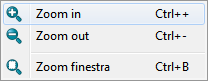

This documentation is not finished. Please help and contribute documentation.
See Draft ShapeString for good documented Command. Gui Command gives an overview over commands. And see List of Commands for other commands.
Go to Help FreeCAD to contribute.
|
| Posizione nel menu |
|---|
| Visualizza → Zoom → opzione |
| Ambiente |
| Tutti |
| Avvio veloce |
| ... |
| Vedere anche |
| Tipi di mouse |
Descrizione
Permette di scalare la vista. Offre la possibilità di ingrandire, di ridurre o di adattare la vista a una regione selezionata con il mouse.
Il menu dello strumento Zoom: 
{kind=link}
Utilizzo
- Nel menu Visualizza → Zoom → cliccare sulla funzione desiderata. La vista viene scalata secondo il passo impostato.
- Ripetere
 Zoom in oppure
Zoom in oppure  Zoom out fino ad ottenere la scalatura desiderata.
Zoom out fino ad ottenere la scalatura desiderata.
Il Passo dello zoom è regolabile in Modifica → Preferenze → Visualizzazione → Vista 3D.
Nella stessa scheda, selezionando la casella Inverti zoom, si può commutare l'effetto prodotto dalla rotazione della rotella del mouse (si può, ad esempio, decidere se la rotazione in avanti deve ingrandire o ridurre).
Inoltre con l'opzione Zoom al cursore si può usare il cursore per stabilire il centro della scalatura.
Tramite tastiera
- Utilizzare i comandi veloci: Ctrl++ per ingrandire, Ctrl+- per ridurre e Ctrl+B per selezionare una zona.
Tramite mouse
Vedere la pagina Tipi di mouse per scegliere lo stile di navigazione e vedere la pagina Impostare le preferenze per modificarlo.
Tramite mouse selezionando una porzione
- Avviare la fuzione dal menu Visualizza → Zoom → cliccando sulla funzione
 Finestra.
Finestra. - Posizionare il mouse nell'area di lavoro, premere il tasto sinistro e selezionare una zona. Rilasciare il tasto.
Esempi:
Ingrandimento con  Finestra
Finestra
Il rettangolo di selezione dell'area da ingrandire
{kind=link}
La zona ingrandita
{kind=link}